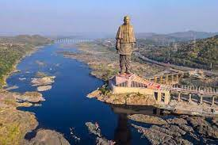
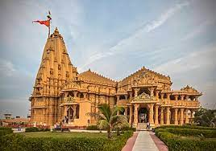
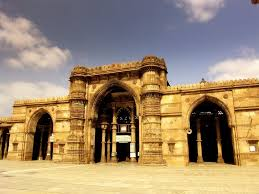
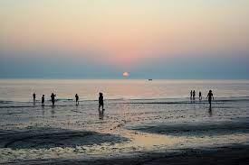
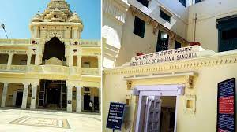
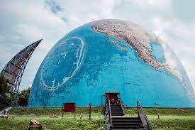
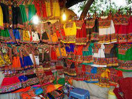

Statue Of Unity
The Statue of Unity is a tribute to the Indian leader Sardar Vallabhbhai Patel, unveiled on 31 October 2018. This statue is a patriotic symbol of the legacy of a man who spent his life in the struggle for freedom. As a mark of respect the government built the statue of sardar vallabhbhai naming it a statue of unity.this statue is located at his birthplace in Gujarat. The statue is designed by Ram V. Sutar. The total amount for the project is US $430 million. The statue stands 182 metres high, making it one of the tallest monuments in the world, second to the St. Louis Arch.
The Statue of Unity is at Sadhu Bet Island. A 12 km square lake will create the atmosphere of equality and diversity. A special trust called as “Sardar Vallabhbhai Patel Rashtriya Ekta Trust” has been created for to manage the place. The statue is made with steel frame and reinforced concrete. For durability, the statue has been given bronze plating. The statue has a 153 m high viewing deck able to hold 200 visitors. It has a panoramic view of the Sardar Sarovar Dam.

Shree Somnath Jyotirling Temple
The Somnath Jyotirlinga Temple is first of the twelve Jyotirlinga shrines of Lord Shiva. It is located on the western coast of Gujarat and is one of the oldest temples of the country. It has been mentioned in ancient texts like Shreemad Bhagavat Gita, Skandpuran, Shivpuran and Rig-Veda which signifies the importance of this temple as one of the most celebrated pilgrimage sites. The temple is located on the ancient Triveni Sangam or the confluence of three rivers - Kapila, Hiran, and Saraswati.
The temple is known as an eternal shrine owing to its perseverance against the test of time. It has withstood several destructions in the past and still has not lost its beauty. It is said that the temple was looted and destroyed as many as seventeen times by emperors like Mahmud Ghazni, Alauddin Khilji, and Aurangzeb.

Shree Dwarkadhish Temple
Dwarkadhish Temple also known as the Jagat Mandir, is a Chalukya styled architecture, dedicated to Lord Krishna. The town of Dwarka has its history dated back to the Kingdom of Dwaraka in Mahabharata. The five storied main shrine is grand and marvelous in itself constructed of limestone and sand. The 2200-year-old architecture, is believed to be built by Vajranabha, who constructed it over the land reclaimed from the sea by Lord Krishna.
The temple showcases intricate sculptural detailing done by the ancestral dynasties that ruled the region and the black magnificent idol of Lord Krishna. There are other shrines within the temple which are devoted to Subhadra, Balarama and Revathy, Vasudeva, Rukmini and many others.
The devotees are expected to take a dip in the Gomti river before proceeding into the temple through the Swarg Dwar. The eve of Janmashtmi is the most special occasion in any Krishna temple, the Dwarkadhish temple is adorned by thousands of devotees chanting prayers and rituals. The shrine is a hive of colours, voices and faith transforming itself into inner silence and sanctity.

Jama Masjid
The Jama Masjid situated in Ahmedabad is one of the largest mosques in India built in the period of 1424. This marvellous edifice formed a major part of the old walled city and was built by Emperor Sultan Ahmed Shah, who is the founder of the Ahmedabad. In addition to being a revered shrine, Jama Masjid also houses the tombs of Ahmed Shah I, his son and his grandson followed by the graves of the queens of the king.
A beautiful blend of Hindu and Muslim architecture styles, the expanse of the Jama Masjid is a magnificent sight to behold. It was constructed with the purpose of serving as a private shrine to the Sultans and took about 13 years to reach completion. What's interesting to note is that the mosque was built out of stones and rubble rescued from demolished Hindu and Jain temples.
The facade of Jama Masjid has a huge archway that welcomes you into the main complex. Made out of intricate stonework, the mosque opens into a splendid courtyard with an abolition pool right in the centre. The most striking feature of the construction is its unique meshwork in the main prayer hall, which allows enough illumination into the room without any direct sunlight.

Mandvi Beach
Situated in the Kutch region of Gujarat, Mandvi Beach is a pristine and tranquil seashore which is one of the most popular holiday destinations in the region. In addition to being a laidback beach location, Mandvi Beach is popular for its camping and water sports facilities.
Standing near the Vijay Vilas palace estate in Bhuj, Mandvi Beach is a secluded and undiscovered beach destination with clean water and beautiful view. Take a long walk along the shore as you witness the sun setting over the horizon, or go for bird spotting and discover the beauty of Kutch through its fauna.
Another activity to pursue here is camel ride, which takes you on a round of the entire property as you bobble up and down on this majestic animal's back, or practice some yoga to the tune of the gentle sea. With its tranquil surroundings being it's most alluring quality, Mandvi Beach makes for an enchanting rendezvous with nature and its beauty.

Mahatma Gandhi Birth Place
Porbandar, the birthplace of Mahatma Gandhi is situated at the end of Saurashtra (Gujarat State) and is a picturesque seaport on the Arabian Sea. To commemorate the birth of Gandhiji a 79 ft high imposing building has been built in the lane where Bapu (as Gandhiji is known) was born in 1869.
The prime attraction is the Kirti Mandir. It is a three storeyed ancestral house of Gandhiji where in the exact place where Putlibai, Gandhiji's mother, had given birth to Gandhi, is marked with a 'swastik'. A narrow wooden staircase leads the visitor to the upper storey, in particular Gandhiji's reading room.
Behind Kirti Mandir is Navi Khadi, where Kasturba, Gandhiji's wife was born.
The new building adjoining Kirti Mandir, houses a Gandhian Library, a prayer hall, a nursery and a steeple decorated with episodes from Gandhiji's life.

Science City Ahmedabad
Gujarat Science City is a science centre built by Gujarat government with the aim to showcase science through means of entertainment and draw more students to Science. It has an energy park, IMAX 3-D theatre, a hall of science having science exhibits, simulating thrill rides.
Reading this, you may be thinking that this place would be interesting. That’s exactly what I thought when I first read about this place. Being a science student in my school days, I was very excited about going to Gujarat Science City. I expected interactive exhibits with guides and an opportunity to understand science and have the first-hand experience of academic knowledge that I got in school.
Instead, I encountered the rude staff who were unwilling to start the ride or show, citing low participant numbers, poor quality 3-D show and vaguely described science exhibits without any guide/expert.

Law Garden
Every diehard shopaholic will nod in agreement that nothing can match the joy of street shopping. The Law Garden Night Market in Ahmedabad takes the experience to a whole new level. Wondering how? For starters, it is a night market that comes to life only after sundown. Every evening, the area surrounding the Law Garden, a famous public garden located right in the heart of the city, turns into a lively shopping hub with numerous make-shift stalls. The place buzzes with vendors selling local garments, artificial jewelry, décor items, handicrafts, and street grubs while shopaholics and foodies swarm the streets. Come morning, you cannot find the faintest trace of this vibrant market. It’s almost as if the area has a secret nightlife!
Curious enough to know more about the Law Garden Night Market in Ahmedabad? Here are all essential details such as timings of the market, what to buy, what to eat, nearby restaurants, nearby attractions, useful tips, and more.